The Future of Code Reviews:
Will Humans Still Be Needed?
@avindrafernando
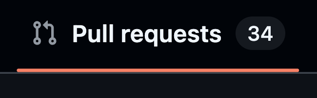
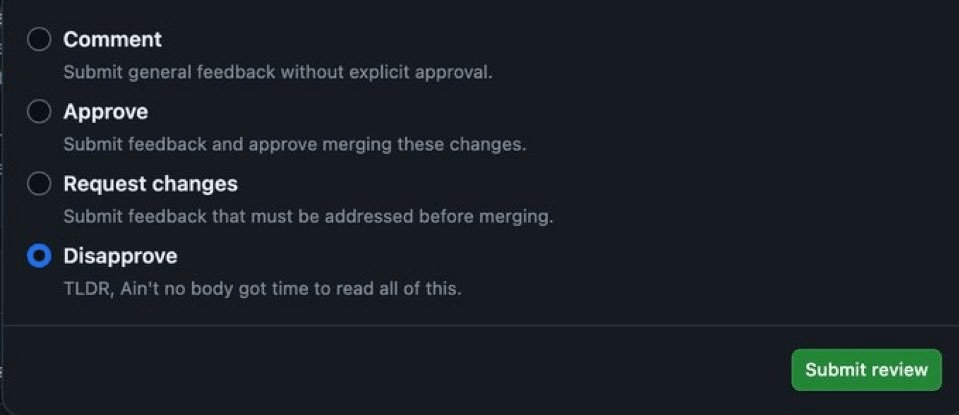
Who Am I?
@avindrafernando
@avindra1
avindrafernando
taprobaneconsulting.tech
And the biggest benefit of a code review is…
Our study reveals that while finding defects remains the main motivation for review, reviews are less about defects than expected and instead provide additional benefits such as knowledge transfer, increased team awareness, and creation of alternative solutions to problems.
— Expectations, Outcomes, and Challenges Of Modern Code Review
Pain Points !!!
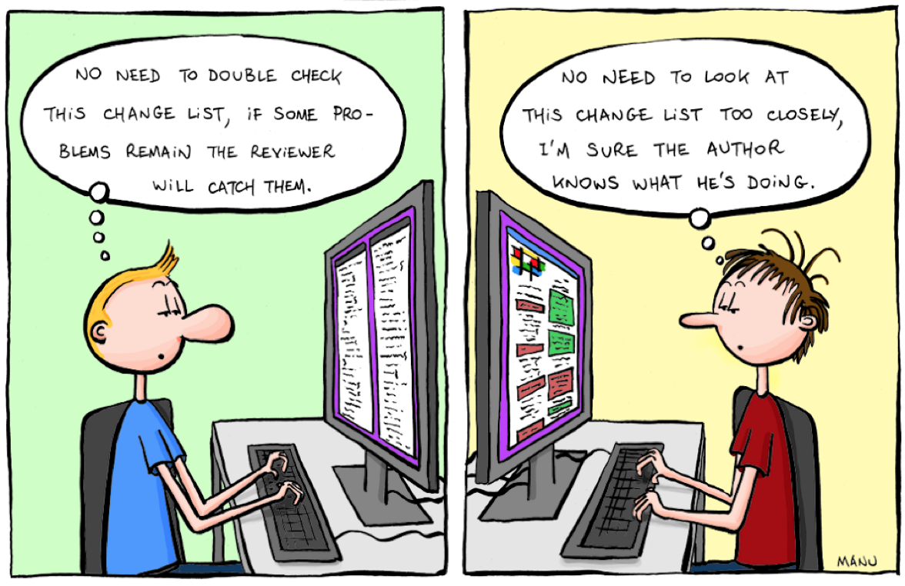
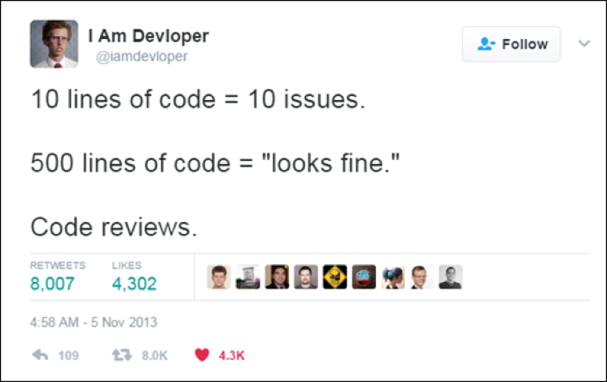
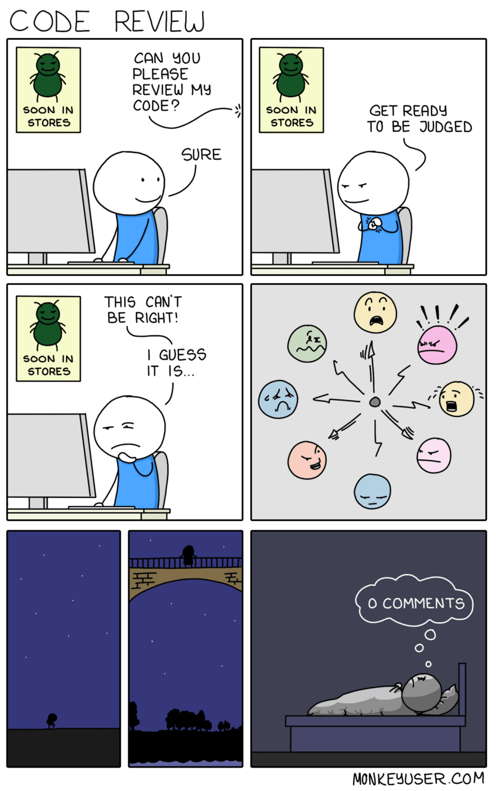
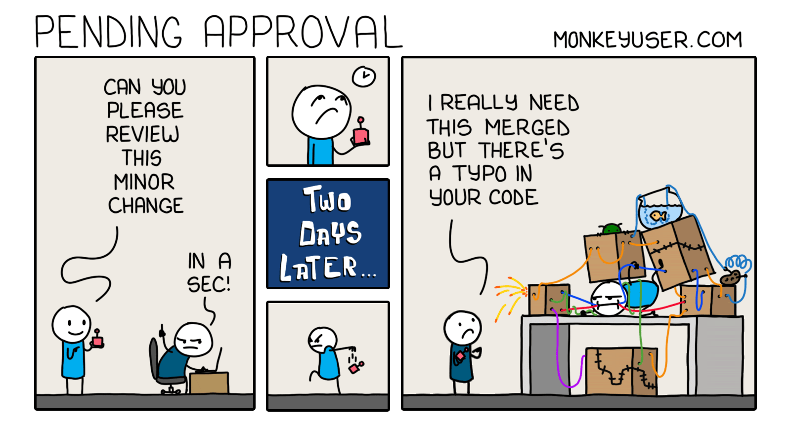
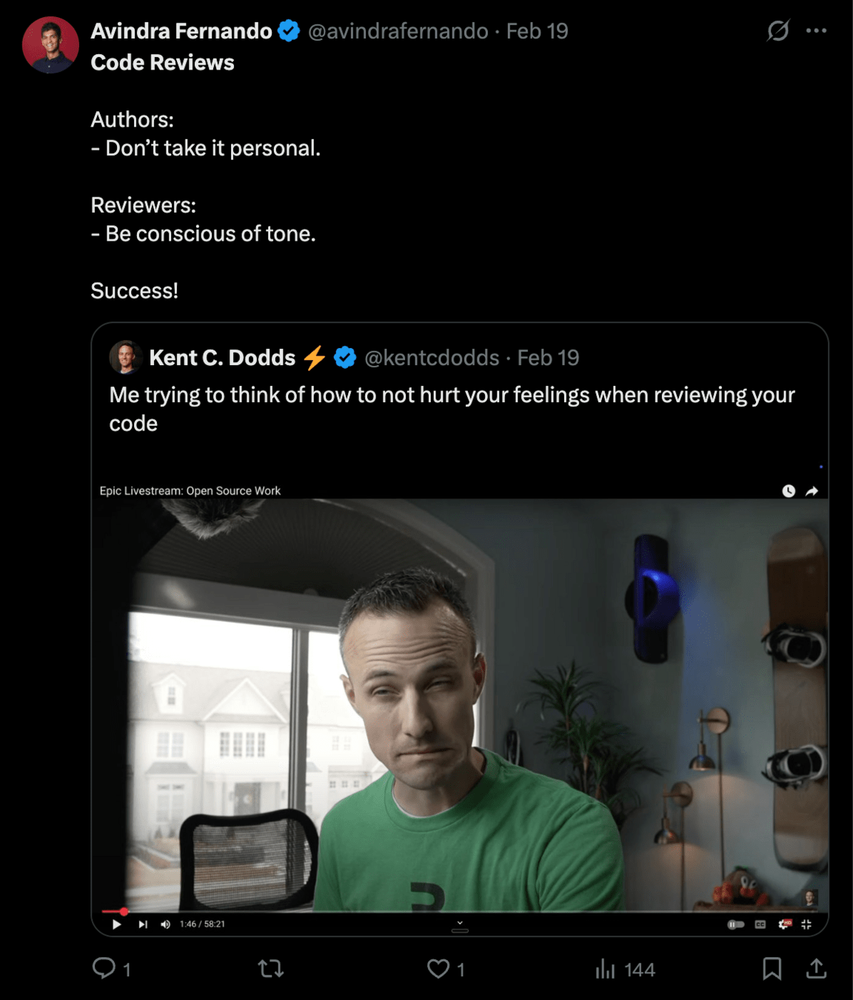
How will AI transform the role of code reviews?
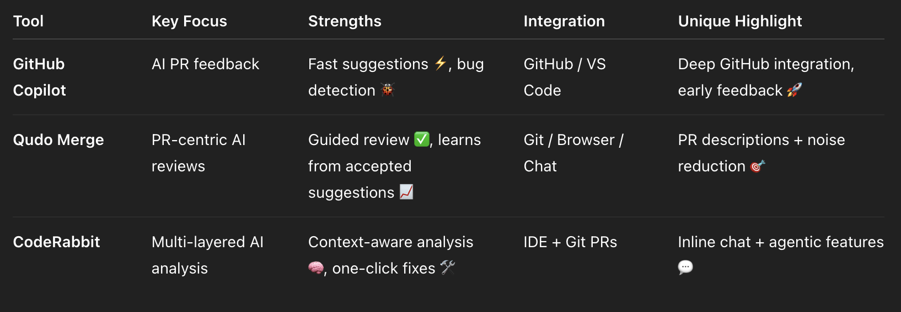
So why AI?
- Quick detection of small bugs
- Security vulnerabilities
- Pattern recognition
- Automated suggestions
- Reviewed in minutes = Time $$$
Alright, buckle up then...
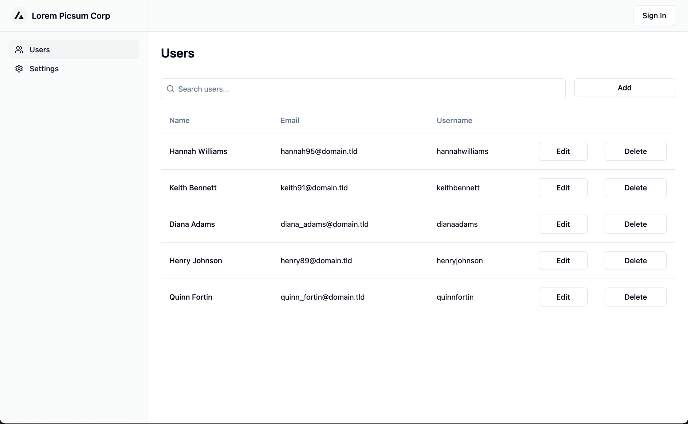
But,
Caution ⚠️
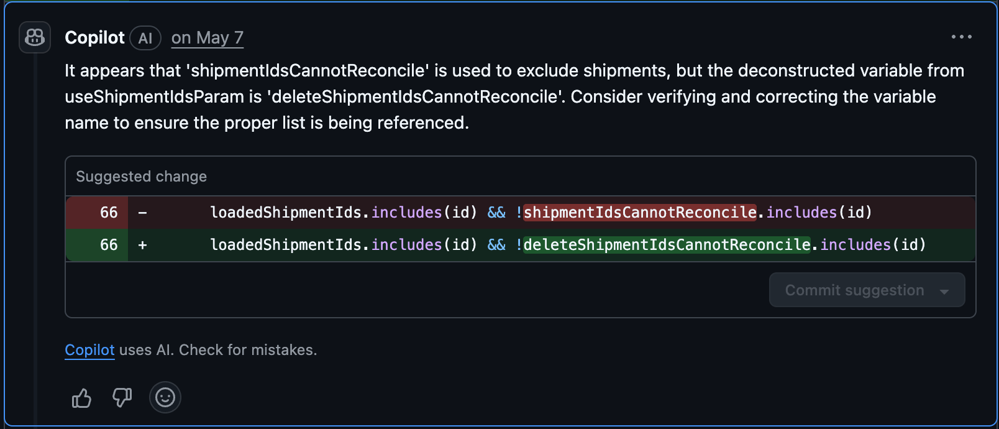
deleteShipmentIdsCannotReconcile is a function 😲
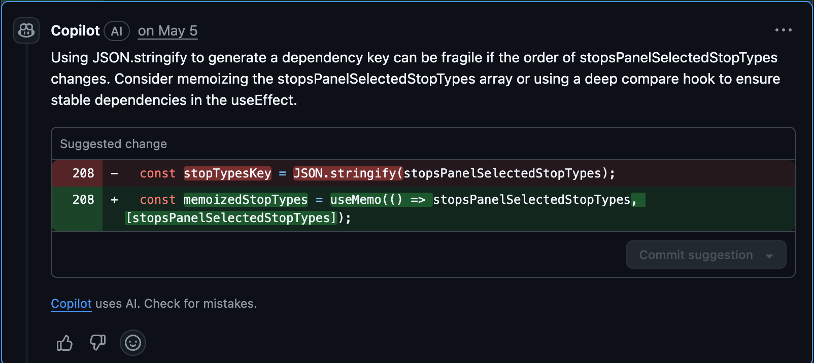
Suggestion caused infinite rendering 😲
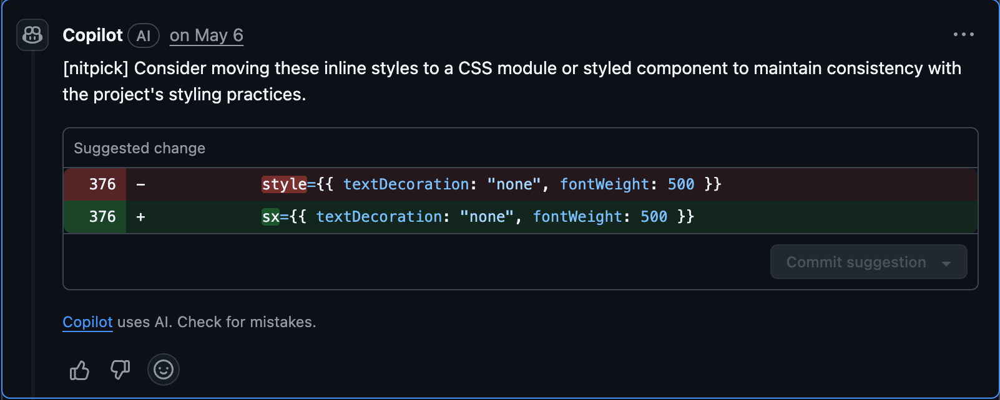
No sx prop in React Router Link component 😲
Straight up lies ⚠️
Straight up hallucianatons❓
AI
Struggles
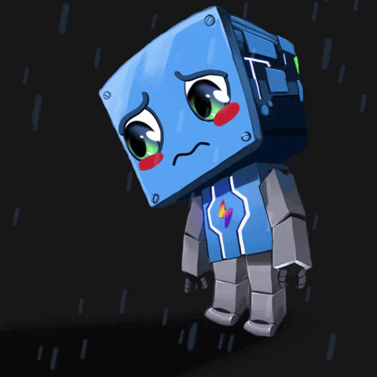
🗳️Poll time...
Replace OR Complement?
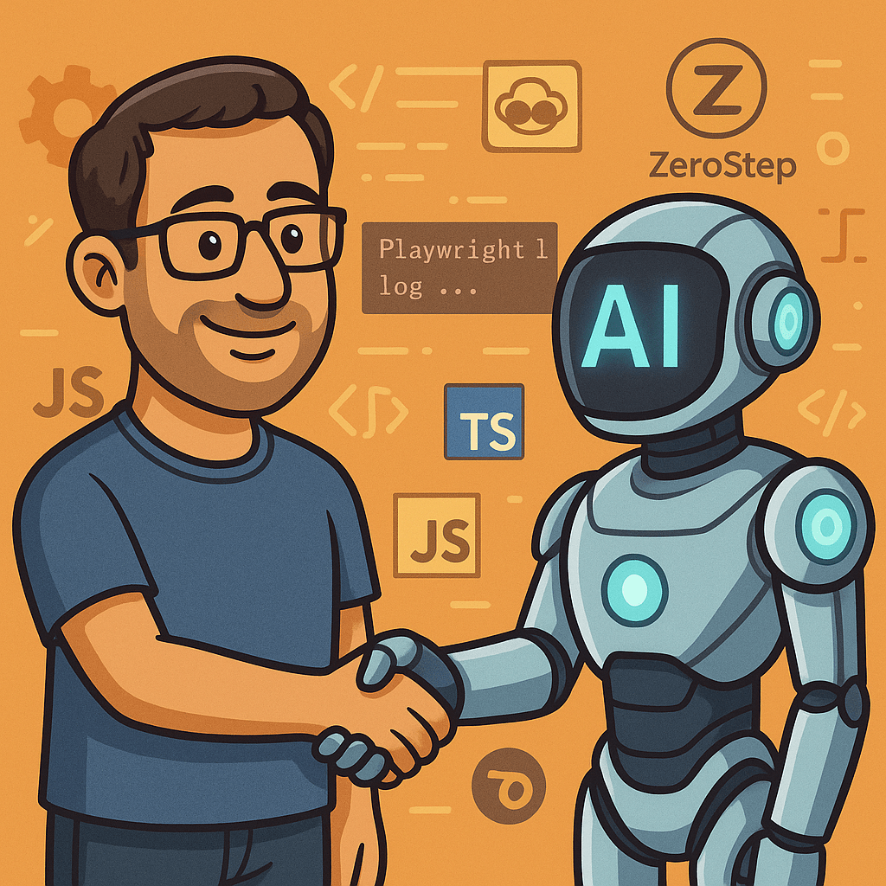
| Task Type | AI Strength | Human Strength |
|---|---|---|
| Style & Lint Fixes | ✅ Strong | ❌ Not Needed |
| Simple Bugs | ✅ Strong | ⚠️ Backup |
| Business Logic | ⚠️ Partial | ✅ Critical |
| Architectural Decisions | ⚠️ Partial | ✅ Critical |
| Maintainability | ⚠️ Partial | ✅ Critical |
| Security & Compliance | ⚠️ Partial | ✅ Critical |
| Mentorship & Team Culture | ❌ None | ✅ Essential |
// Eager load everything
const user = await getUser(userId);
const orders = await getOrders(userId);
const preferences = await getPreferences(userId);
return { user, orders, preferences };
AI says...
Human asks...
- Is every API call necessary on every page load?
- Should some data be lazy-loaded?
- Should heavy queries run asynchronously?
const user = await getUser(userId);
// Lazy load on demand
const preferencesPromise = getPreferences(userId);
const ordersPromise = getOrders(userId);
return { user, preferences: await preferencesPromise, orders: await ordersPromise };
🤝 Performance Optimization
// AI generated suggestion
app.get('/api/user/:id', (req, res) => {
const user = db.findUser(req.params.id);
res.json(user);
});
AI says...
Human asks...
- Are we exposing sensitive fields here?
app.get('/api/user/:id', (req, res) => {
const { id, name, email } = db.findUser(req.params.id);
// only public fields
res.json({ id, name, email });
});
🤝 Prevent PII Exposure
// AI generated suggestion
SELECT * FROM posts WHERE author_id = $1;
AI says...
Human asks...
- Are we going to cause an out of memory crash?
SELECT id, author_id, content, created_at
FROM posts
WHERE author_id = $1
ORDER BY created_at DESC
LIMIT 50 OFFSET $2; -- $2 = page * 50
🤝 Prevent Out of Memory Crashes
useEffect(() => {
document.getElementById("myElement").style.color = "blue";
}, []);
AI says...
Human asks...
-
Is it appropriate to manipulate the DOM directly within React?
-
Are we breaking the React declarative paradigm here?
-
Should we instead trigger a re-render to update the UI?
onst [color, setColor] = useState("initialColor");
useEffect(() => {
setColor("blue"); // Update state to trigger re-render
}, []);
return <div id="myElement" style={{ color }}>Hello World!</div>;
🤝 DOM Manipulation in React
// AI suggests adding a `for` loop for performance
const arr = [1, 2, 3, 4, 5];
let result = [];
for (let i = 0; i < arr.length; i++) {
result.push(arr[i] * 2);
}
AI says...
Human asks...
-
Are we optimizing the readability and maintainability of the code?
-
Can we leverage built-in higher-order functions to keep the code clean and concise?
const arr = [1, 2, 3, 4, 5];
// Using map for clarity and performance
const result = arr.map(x => x * 2);
🤝 Readability improvement
AGENTS.md
This project uses React with TypeScript. Testing is done using Playwright (E2E) and Vitest (unit).
It also uses TanStack Query for data fetching and MUI for UI components.
## 🧠 General Guidelines
- Use **TypeScript** across all files, where applicable.
- Stick to **function components** and **React hooks**.
- Keep components small and reusable.
- Use **TanStack Query (React Query)** for data fetching (found mostly in `src/hooks/react-query`).
- Wrap network calls with custom hooks (e.g., `useUser()` instead of calling `useQuery` directly in components).
## 🧪 Testing Guidelines
### Unit Tests (Vitest)
- Use `.test.ts(x)` files colocated with source.
- Use `describe`, `it`, `expect` from `vitest`.
- Mock React Query hooks using `vi.mock(...)`.
### E2E Tests (Playwright)
- Store tests in `e2e/` folder.
- Prefer role-based, label-based, placeholder-based, text-based queries (in that order), over `page.locator` queries.
## 🎨 MUI Guidelines
- Prefer `sx` prop for styling over inline `style`.
- Use responsive values when possible: `{ xs: 12, md: 6 }`
## ✅ Code Style
- No `any` type.
- Use `as const` for enums and config objects.
- Always type custom hooks and API responses (found mostly in `src/hooks/react-query`).
## ⚠️ Things to Avoid
- Avoid `useEffect` for data fetching — use React Query.
- Avoid commented out code
- Avoid deeply nested ternaries or logic-heavy JSX.
- Don’t generate unused files, default exports, or styles.Learnings
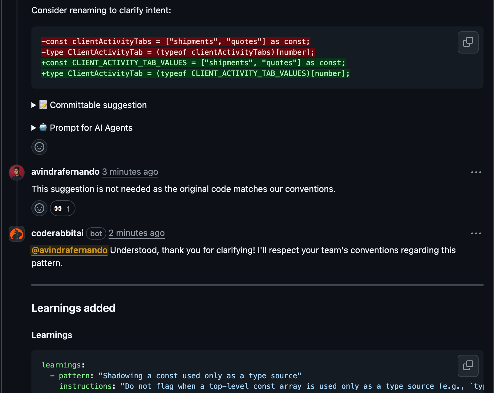
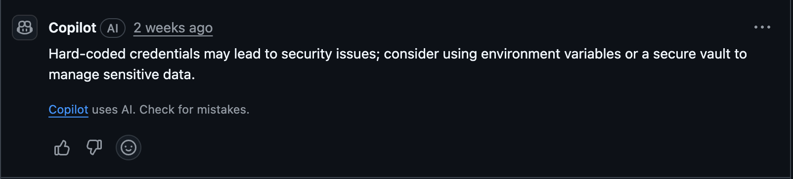
Stay Hungry. Stay Foolish.
— Steve Jobs